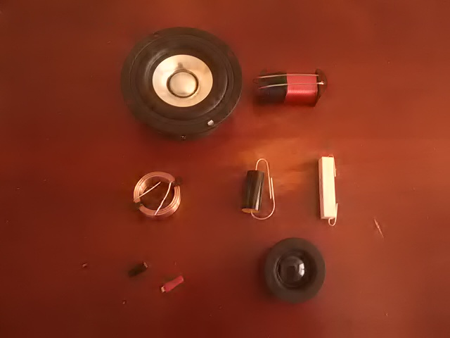
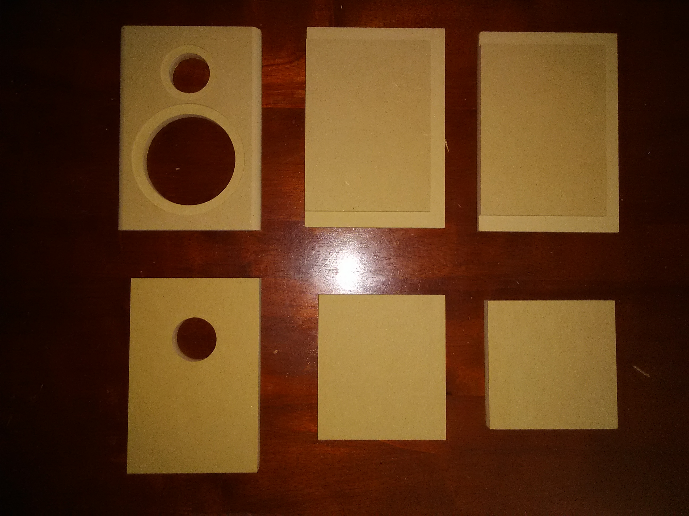
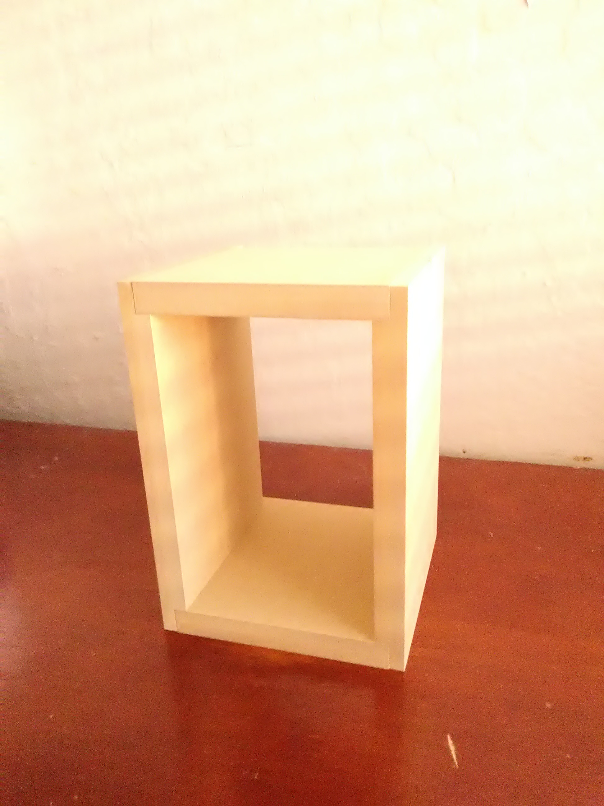
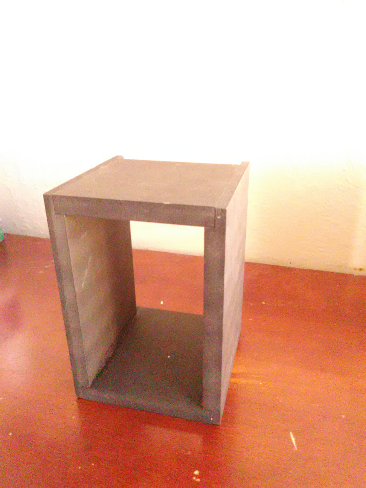
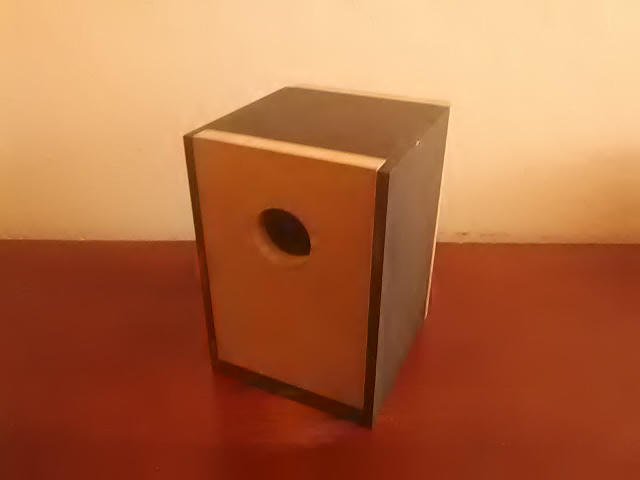

Design Process
Design Ideas
When I was deciding on speaker cabinet, I made a couple of different iterations of how I wanted it to look like. I wasn't exactly sure how I was going to construct the pieces that I designed so I went through a couple designs. In this first design, I was planning on adding bluetooth, but I ran out of time. I also wanted to implement a volume knob to better control the sound output.


When I was deciding on speaker cabinet, I made a couple of different iterations of how I wanted it to look like. I wasn't exactly sure how I was going to construct the pieces that I designed so I went through a couple designs.


Here are all the components I ordered.

Here are the pieces of wood.

Here is the wood glued up.

Here is the wood painted.

Here is the speaker constructed from the back
